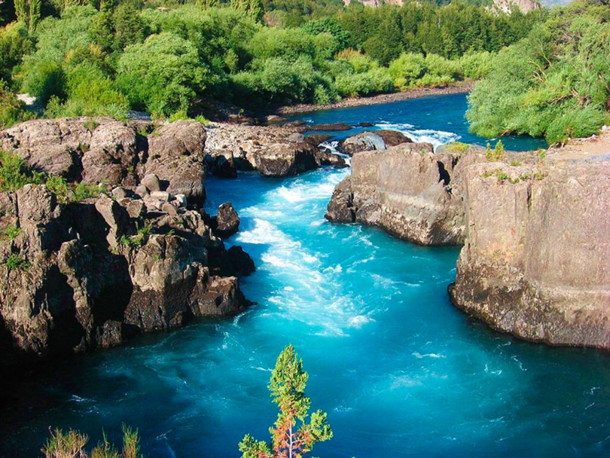

La naturaleza abarca todos los elementos que conforman nuestro mundo físico y biológico. Desde los paisajes más imponentes hasta las formas de vida más diminutas, la naturaleza es la esencia misma de nuestro planeta.
En esta introducción, exploraremos su diversidad, su impacto en nuestras vidas y la importancia de conservarla.
La naturaleza nos conecta con emociones, experiencias y la necesidad de preservarla para las futuras generaciones.

Componentes y Características Principales:
Diversidad de vida: Incluye todas las formas de vida (reinos animal, vegetal, hongos, etc.) y la biodiversidad del planeta.
Elementos inanimados: Componentes físicos como rocas, ríos, océanos, atmósfera y suelo.

Leyes físicas: La naturaleza se rige por sus propias reglas, como la gravedad, la evolución y la fotosíntesis.
Autosuficiencia: Evoluciona y se desarrolla por sí misma, independiente del ser humano.